도시계획기사 (2018-09-15 기출문제)
1과목: 도시계획론
1. 프리드만(Friedmann)이 주장한 것으로 계획의 집행에 직접적으로 영향을 받는 사람들과 상호 대화를 통하여 수립하는 계획은?
- 교류적 계획
- 점진적 계획
- 종합적 계획
- 급진적 계획
(정답률: 88%)

2. 도시조사에 있어 자료원에 대한 접근이 직접적 혹은 간접적이냐에 따라 1차 자료와 2차 자료로 구분한다. 도시조사에 대한 설명으로 옳지 않은 것은?
- 1차 자료는 계획가가 원하는 현실감 있는 정확한 정보를 제공해 줄 수 있다는 장점이 있다.
- 도시계획을 위한 도시조사에서는 1차 조사와 2차 조사가 병행하여 이루어지는 것이 일반적이다.
- 2차 자료에 비해 1차 자료는 비교적 적은 노력과 비용으로 계획가가 원하는 정보를 얻을 수 있다.
- 1차 자료는 도시계획의 대상이 되는 단위 지역이나 당해 지역의 주민들로부터 현지조사나 관찰 및 면접 등을 통해 직접적으로 도출한 자료이다.
(정답률: 84%)
3. 도시ㆍ군계획시설의 민간 투자방식에 대한 설명으로 옳지 않은 것은?
- BOO 방식 : 시설의 준공과 동시에 국가 또는 지방자치단체에 소유권이 인정되는 방식
- BOT 방식 : 시설의 준공 후 일정 기간 동안 사업시행자에게 소유권이 인정되며, 기간 만료 시 국가 또는 지방자치단체에 소유권이 이전되는 방식
- BTO 방식 : 시설의 준공과 동시에 국가 또는 지방자치단체에 소유권이 귀속되며, 사업 시행자에게 일정 기간 시설의 관리 운영권을 인정하는 방식
- BTL 방식 : 사업시행자가 시설 준공 후 일정 기간 동안 운영권을 정부에 임대하고 임대 기간 종료 후 시설물을 국가 또는 지방자치단체에 이전하는 방식
(정답률: 60%)
4. 토지이용계획의 실행수단은 간접적 실행수단과 직접적 실행수단으로 구분할 수 있다. 간접적 실행수단에 해당되지 않는 것은?
- 도로정비와 같은 도시기반시설 설치
- 지구 차원의 토지 이용 지침이 포함된 지구단위계획 수립
- 개발 사업자가 토지를 확보하여 스스로 건축행위를 하여 실현
- 주거지역, 상업지역 등 용도를 지정하여 합치되는 용도만을 허용하는 용도지역제 운영
(정답률: 71%)
5. 국토공간계획지원체계(KOrea Planning Support System, KOPSS)에 포함되어 있지 않은 분석모형은?
- 세움이(건축계획지원)
- 경관이(경관계획지원)
- 재생이(도시정비계획지원)
- 시설이(도시기반시설계획지원)
(정답률: 71%)
6. 토지이용계획의 수립과정으로 옳은 것은?
- 현황 파악 → 계획구역 설정 → 계획 목표 및 지표 설정 → 면적수요 산정
- 계획구역 설정 → 현황 파악 → 계획 목표 및 지표 설정 → 면적수요 산정
- 계획구역 설정 → 현황 파악 → 면적수요 산정 → 계획 목표 및 지표 설정
- 현황 파악 → 계획구역 설정 → 면적수요 산정 → 계획 목표 및 지표 설정
(정답률: 52%)
7. 일정지역의 개발을 법규에서 정한 규정 이상으로 강하게 규제할 필요가 있을 경우 이에 대한 보상으로써, 문화재 보호나 환경보전 등에 있어 활용되는 방식으로 그 지역의 토지소유자로 하여금 재산상 손실부분만큼 다른 지역에서 만회할 수 있도록 하는 제도는?
- 유도지역제도(ICZ)
- 개발권이양제도(TDR)
- 계획단위개발제도(PUD)
- 복합용도개발제도(MXD)
(정답률: 86%)
8. 도시재개발사업의 문제점 및 개선방안에 대한 설명으로 옳지 않은 것은?
- 상위계획에 입각한 일관성 있는 정책이기보다 행정 편의 위주의 대책으로 시행된 경우가 많다.
- 주로 지구 단위의 미시적 관점에서 진행되어 주변 지역과 전체 도시와의 체계성이 상실되고 있다.
- 토지이용의 고도화를 위해 고층의 업무 및 상업기능 위주로 진행되어 다양한 도시문제를 양산하고 있다.
- 도심 내에서 재개발을 하는 경우에는 도시 활성화와 주거환경의 개선을 위해 복합용도개발보다는 순수한 주택단지 계획기술의 개발에 힘쓸 필요가 있다.
(정답률: 73%)
9. 고대 메소포타미아와 이집트의 도시에서 시작되었던 것을 히포다무스(Hippodamus)가 그리스의 도시계획에 적용시킨 것은?
- 성곽의 축조
- 격자형 가로망
- 공중정원의 설치
- 공공시설의 중앙배치
(정답률: 81%)
10. 다음 설명에 해당하는 행동을 수행한 단체는?
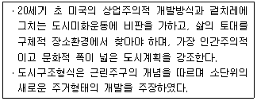
- 르네상스운동회
- 세계건축가협회
- 에키스틱스협회
- 미국지역계획가협회
(정답률: 73%)
11. 용도지역의 분류에 해당하지 않는 것은?
- 환경지역
- 관리지역
- 도시지역
- 농림지역
(정답률: 73%)
12. 크리스탈러(W. Christaller)의 중심지 이론에서 작은 중심지로부터 큰 중심지로 확대되어가는 중심지 계층의 포섭이론 중 K = 7에 해당되는 원리는?
- 교통원리
- 시장원리
- 행정원리
- 문화원리
(정답률: 69%)
13. 아래 그림이 나타내는 이론과 3(빗금친 부분)에 해당하는 토지이용이 올바르게 연결된 것은?
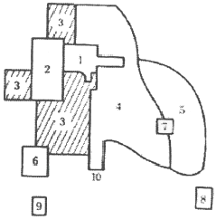
- 선형이론 - 점이지대
- 선형이론 - 도매경공업지구
- 다핵심이론 - 고소득층 주거지구
- 다핵심이론 - 저소득층 주거지구
(정답률: 79%)
14. 광역도시계획의 내용으로 옳지 않은 것은?
- 광역시설의 배치ㆍ규모ㆍ설치에 관한 사항
- 광역계획권의 공간구조와 기능분담에 관한 사항
- 광역계획권의 녹지관리체계와 환경보전에 관한 사항
- 10년을 단위로 광역계획권 지정 목적의 달성에 필요한 사항
(정답률: 63%)
15. 공업지역의 입지 결정에 고려되어야 할 조건으로 옳지 않은 것은?
- 용수가 충분하고 전력 공급이 가능한 지역
- 주거지역 또는 상업지역과 완벽하게 이격이 되는 지역
- 평탄지역으로 적정규모 이상의 부지 공급이 가능한 지역
- 지역 간 수송이 원활하도록 고속도로 및 국도 접근이 용이한 지역
(정답률: 77%)
16. 1990년대에 미국과 캐나다에서 도시의 무분별한 확산에 의한 도시 문제를 극복하기 위해 제시된 도시개발 패러다임은?
- 낭만주의
- 효용주의
- 뉴어바니즘
- 창조혁신도시
(정답률: 86%)
17. 과거 10년간 등비급수적으로 인구가 증가하여 현재 인구가 123만명이고, 10년 전 인구는 100만명인 도시가 있다. 이 도시의 연평균 인구증가율은?
- 약 1.1%
- 약 2.1%
- 약 4.1%
- 약 5.1%
(정답률: 68%)
18. 토지이용계획에서 수요예측을 하는데 가장 중요한 요소로서 비교적 쉽고 간편하게 추정이 가능하여 자주 이용되는 요소는?
- 인구 현황
- 재정여건 현황
- 건축물 면적 현황
- 도시기반시설 현황
(정답률: 84%)
19. 미래 도시의 새로운 계획 패러다임 방향으로 옳지 않은 것은?
- 지속 가능한 도시 개발로의 전환
- 미래 사회에 맞는 새로운 U-도시계획
- 시민참여의 확대와 계획 및 개발주체의 다양화
- 지역별 특화를 위한 도ㆍ농 분리적 계획 체계로의 전환
(정답률: 85%)
20. 공동구의 장점으로 옳지 않은 것은?
- 수용하는 도관의 유지관리가 용이하다.
- 가로와 도시의 미관을 개선할 수 있다.
- 기존 가로에 도관의 이설 및 신설이 용이하다.
- 빈번한 노면굴착에 의한 교통 장애를 제거할 수 있다.
(정답률: 75%)
2과목: 도시설계 및 단지계획
21. 지역물류 중계기지로서의 특징을 지니고 내수화물 및 도소매 품목을 취급하며 부차적으로 농산물의 집하와 1차 가공기능 입지로서의 기능을 수행하는 물류단지의 유형은?
- 전국 거점형 물류단지
- 산업단지 지원형 물류단지
- 중소도시 지원형 물류단지
- 내륙대도시 지원형 물류단지
(정답률: 60%)
22. 공동주택의 일조 등의 확보를 위한 높이제한에 관한 설명 중 ( ) 안에 알맞은 것은?
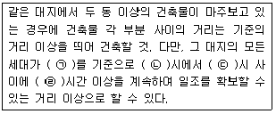
- ㉠ : 하지, ㉡ : 9, ㉢ : 15, ㉣ : 2
- ㉠ : 하지, ㉡ : 12, ㉢ : 16, ㉣ : 2
- ㉠ : 동지, ㉡ : 12, ㉢ : 16, ㉣ : 2
- ㉠ : 동지, ㉡ : 9, ㉢ : 15, ㉣ : 2
(정답률: 77%)
23. 래드번에 처음 채택된 슈퍼블럭을 구성함에 따라 얻어질 수 있는 효과가 아닌 것은?
- 보도와 차도의 완전한 혼합형 개발 가능
- 충분한 공동의 오픈스페이스의 확보 가능
- 건축물을 집약화함으로써 고층화ㆍ효율화 가능
- 전기ㆍ하수ㆍ쓰레기 수거 등 도시시설의 공동화 가능
(정답률: 80%)
24. 주택단지 계획 시 주택용지율을 70%, 총 인구밀도를 210 인/ha로 한다면, 순 인구밀도는?
- 147 인/ha
- 210 인/ha
- 300 인/ha
- 333 인/ha
(정답률: 67%)
25. 지구단위계획과 도시설계 및 상세계획 간의 차이점에 대한 설명으로 옳지 않은 것은?
- 법적 근거는 3개 제도가 모두 달랐다.
- 상세계획을 제외하고 지정 기준의 규모제한이 없다.
- 제도 도입시기는 도시설계, 상세계획, 지구단위계획 순이다.
- 계획변경은 도시설계의 경우 도시설계 작성절차, 상세계획의 경우 도시계획 결정절차, 지구단위계획의 경우 도시ㆍ군관리계획 결정절차에 준한다.
(정답률: 67%)
26. 도시설계에 관하여 아래와 같이 주장한 미국의 사회학자는?
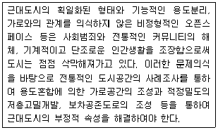
- Herbert Gans
- Jane Jacobs
- Kevin Lynch
- Paul D.Spreiregen
(정답률: 63%)
27. 구조물의 높이(H)와 그 외부 공간의 거리(D)의 관계에서 공간 폐쇄감의 상실(공허감)이 시작되는 각도는?
- 약 14°
- 약 18°
- 약 20°
- 약 25°
(정답률: 52%)
28. 정연한 도시환경 질서 위에 가변성이 큰 오픈스페이스 체계를 계획함으로써 과도한 정형성을 완화하고 동시에 양호한 접근로를 조성하는 오픈스페이스 배치 형태는?
- 연속(sequence)
- 위요(encirclement)
- 결절화(nodalization)
- 중첩(superimposition)
(정답률: 46%)
29. 교차로의 우선방향이 명확하기 때문에 교통사고의 위험이 적으며, 주택지에서 적극적으로 이용될 수 있는 교차로 형태는?
- T형
- +형
- Ring형
- Loop형
(정답률: 60%)
30. 다음 중 획지계획에 대한 설명으로 옳지 않은 것은?
- 용도에 맞는 적정 획지를 계획하도록 한다.
- 다양한 규모의 획지로 분할하여 여러 계층의 수요를 고르게 만족시킬 수 있도록 하여야 한다.
- 획지계획의 기본 목표는 주택용지의 경우 토지이용의 효율성과 주거의 쾌적성을 보장하는 것이다.
- 간선가로망 주변에 소형가구를 많이 배치하여 상업시설과 부대시설에 의한 가로변의 미관 저해를 방지하도록 한다.
(정답률: 77%)
31. 도시공원 및 녹지 등에 관한 법률 시행규칙상 아래 ( ) 안에 들어갈 알맞은 것은?
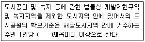
- 2
- 3
- 5
- 10
(정답률: 73%)
32. 도시설계이론 중 설계자의 주관, 직관, 창의력 등에 의존해서 이루어지는 설계접근 방식으로 설계 대상의 규모가 작고 규제가 한정되는 경우에 사용되는 도시설계 방법은?
- 개괄적 설계방법
- 내향적 설계방법
- 다원적 설계방법
- 점진적 설계방법
(정답률: 70%)
33. 다음 중 근린주구(Neighborhood Unit)와 관련이 없는 것은?
- 페리(C. A. Perry)
- 아디케스(F. Adickes)
- 래드번(Radburn) 계획
- 스타인(Clarence S. Stein)
(정답률: 75%)
34. 단지경관의 기본이론인 맥락(context) 중 2차적 맥락을 적합하게 설명한 것은?
- 지역의 특징적 형태나 유형 등을 참조하여 지역의 향토적 흐름을 유추하는 단계를 말한다.
- 건축언어를 일치시키는 것이 목적이며, 여기에는 색채, mass, 높이, 처마선 등이 포함된다.
- 외형상 주변 건물의 파사드를 맞추는 작업으로 시각적 조화를 바탕으로 하는 통일성에 초점을 둔다.
- 이미지 유추와 같은 추상적 형태를 반영하며 역사나 철학을 바탕으로 설계가의 작품관과 합해진 형태는 추구한다.
(정답률: 43%)
35. 주차장법 시행규칙상 노외주차장의 설치에 대한 계획기준에 관한 아래 내용 중 ( ) 안에 들어갈 알맞은 것은?
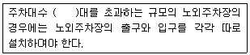
- 100
- 200
- 300
- 400
(정답률: 60%)
36. 조례로 정한 용적률 500%의 근린상업지역 내 대지에 상징시설을 위한 광장면적을 전체대지면적의 20%로 조성하면서 수립하는 지구단위계획에서 인센티브에 의한 최대 용적률은? (단, 가중치는 0.8로 한다.)
- 550%
- 600%
- 650%
- 700%
(정답률: 42%)
37. 축척이 1/50000인 지형도 위에 20m 간격으로 등고선이 그려져 있고 5줄마다 계곡선이 있다. 어떤 사면의 경사를 알기 위해 측정한 계곡선 간의 수평거리가 1.2cm이었을 때 이 사면의 경사도는?
- 약 9%
- 약 12%
- 약 17%
- 약 20%
(정답률: 55%)
38. 학교의 결정기준에 관한 아래 내용 중 ( ) 안에 들어갈 알맞은 것은?
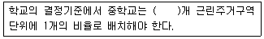
- 1
- 2
- 3
- 4
(정답률: 54%)
39. 지구단위계획에서 도시ㆍ군관리계획도시의 지형도 축척으로 옳은 것은?
- 1/500~1/1000
- 1/1000~1/5000
- 1/5000~1/10000
- 1/10000~1/25000
(정답률: 70%)
40. 전통적으로 구분되는 유기적 방법과 구성적 방법으로 도시설계 기법을 제시한 학자는?
- David Gosling
- Paul Meadows
- Oscar Newman
- Goeffrey Broadbent
(정답률: 69%)
3과목: 도시개발론
41. 전원도시이론의 영향을 받아 1904년 만들어진 세계 최초의 전원도시 레치워스(Letch worth)를 계획한 사람은?
- 오웬
- 페리
- 언윈
- 스타인
(정답률: 62%)
42. 재개발의 목적에 관한 설명으로 옳지 않은 것은?
- 주택 및 물리적 시설의 불량, 노후화를 개선, 예방
- 도시적 형태와 기능을 지니지 않은 토지에서 도시적 기능을 부여
- 재개발지구 주민들의 사회 경제적 조건을 향상시키며 공동체적 삶의 질을 향상
- 교통시설과 교통체계의 정비, 지역사회를 위한 학교, 공원, 우체국 등 다양한 공공시설과 서비스를 적정 배치 공급
(정답률: 66%)
43. 다음 중 부동산과 금융을 결합한 형태로서 유동성 문제와 소액투자 곤란의 문제를 증권화라는 방식을 이용하여 해결하고 있는 부동산 펀드의 대표적인 형태는?
- 부동산 신디케이션
- 에스크로우(Escrow)
- 자산담보부증권(ABS)
- 부동산투자신탁(REITs)
(정답률: 73%)
44. 주택재개발사업 시행방식의 종류에 관한 설명으로 옳지 않은 것은?
- 순환재개발 방식은 오래된 재개발아파트부터 순차적으로 생애주기별로 재개발해 나가는 방식을 말한다.
- 자력재개발 방식은 도로, 공원 등 도시기반 시설은 공공이 설치하고, 주민은 토지구획정리사업의 환지기법을 적용하여 환지받은 토지에 각자가 건물을 짓도록 하는 방식을 말한다.
- 위탁재개발 방식은 철거를 기본수단으로 하는 사업방식으로 정부가 건설업체를 알선하고 주민이 재정을 부담하여 5층 이하의 공동주택을 건립하는 사업이었다.
- 합동재개발 방식은 주민과 건설업자, 정부의 3자가 공동의 이익을 추구하는 사업으로, 점유한 국ㆍ공유지는 싸게 불하받아 주민을 수용하는 주택이외에 여유분의 주택을 지어 매각함으로써 주민은 사업비 부담을 대폭 경감할 수 있는 방식을 일컫는다.
(정답률: 47%)
45. 도시마케팅의 구성요소 중 고객으로 간주하기 힘든 것은?
- 주민
- 투자기업
- 경쟁도시
- 관광객 및 방문객
(정답률: 77%)
46. 지역의 문화전통과 자연환경에 첨단기술산업의 활력을 도입하여 첨단기술산업군, 학술연구기관, 쾌적한 생활환경의 3가지 기능이 잘 조합된 도시 조성을 실현하여 미래지향적인 새로운 정주체계를 달성하고자 하는 개발은?
- 연구단지 개발
- 테크노폴리스 개발
- 첨단산업단지 개발
- 기술창업보육센터 개발
(정답률: 64%)
47. ‘부동산증권화’의 효과 중 맞는 것은?
- 자산보유자의 입장에서 증권화를 통해 유동성을 낮출 수 있다.
- 투자자 입장에서는 위험이 크지만 수익률이 좋은 금융상품에 대한 투자기회를 가지게 된다.
- 자산보유자의 입장에서는 대출회전율이 높아져 총수익이 증가하고 대출시장에서의 시장점유율을 높일 수 있다.
- 차입자 입장에서는 단기적으로 직접적 혜택이 크며, 장기적으로 대출한도의 확대와 금리인하로 인한 차입여건 개선이 가능하다.
(정답률: 43%)
48. 참여정부에서 추진했던 혁신도시의 유형 중 맞지 않는 것은?
- 혁신거점도시
- 교육ㆍ문화도시
- 지식기반도시
- 친환경 녹색도시
(정답률: 49%)
49. 기업의 자금조달 구조를 크게 내부자금과 외부자금으로 분류할 때에 다음 중 내부자금의 형태에 해당하는 것은?
- 국제리스
- 상업차관
- 회사채 발행
- 감가상각충당금
(정답률: 55%)
50. 수출기반모형에서 가정하는 사항들 중에 가장 알맞은 것은?
- 오픈된 경제
- 동일한 생산비
- 동일한 생산기술
- 동일한 소비수준
(정답률: 55%)
51. 도시ㆍ군계획시설로서의 도로의 일반적 결정기준에 관한 설명이 옳지 않는 것은?
- 기존 도로를 확장하는 경우에는 원칙적으로 양쪽 방향으로 동일한 폭만큼씩 확장한다.
- 국도대체우회도로에는 집산도로 또는 국지도로가 직접 연결되지 아니하도록 한다.
- 도로의 폭은 당해 시ㆍ군의 인구 및 발전전망을 감안한 교통수단별 교통량분담계획, 당해 도로의 기능과 인근의 토지이용계획에 의하여 정한다.
- 도로가 전력전화선 등을 가설하거나 변압기 탑ㆍ개폐기탑 등 지상시설물이나 상하수도ㆍ공동구 등 지하시설물을 설치할 수 있는 기반이 되도록 해야 한다.
(정답률: 66%)
52. 도시정책에서 복합용도개발의 근본적인 목표로 가장 거리가 먼 것은?
- 직주근접 유도
- 원거리 통행 감소
- 분산적 도시화 추진
- 도시의 외연적 확산 완화
(정답률: 72%)
53. 대중교통중심개발(TOD)의 주요 원칙으로 틀린 것은?
- 지역 내 목적지간 보행친화적인 가로망을 구축한다.
- 생태적으로 민감함 지역이나 수변지, 양호한 공지의 보전을 추구한다.
- TOD내에는 대중교통서비스를 제공할 수 있는 수준의 저밀도 공동주택만을 조성한다.
- 대중교통 정류장으로부터 보행거리 내에 상업, 주거, 업무, 공공시설 등을 혼합 배치한다.
(정답률: 79%)
54. 다음 중 프로젝트 금융(Project Financing)에 대한 설명으로 옳지 않은 것은?
- 금융기관이 부담하는 각종 위험이 통상적인 기업금융에 비해 적은 편이다.
- 다양한 이해관계자들의 협상에 의해 이루어지기 때문에 복잡한 금융절차를 가진다.
- 사업추진 과정상의 제약요인들을 다양하고 유연한 사업기법을 적용하여 사업성과 생산성을 높일 수 있다.
- 별도의 프로젝트회사를 설립하여 사업을 수행하므로 비소구금융 및 부외금융의 효과를 얻을 수 있다.
(정답률: 65%)
55. 다음 중 도시개발사업의 전부 또는 일부를 환지방식으로 시행하려 할 때 환지계획의 작성에 포함되지 않는 내용은?
- 환지 설계
- 필지별로 된 환지 명세
- 환지 청산금 징수 시기
- 필지별과 권리별로 된 청산 대상 토지 명세
(정답률: 67%)
56. 개발권양도(Transfer of Development Rights, TDR) 제도에서 개발에 대한 규제가 강한 지역은?
- 개발유도지역
- 개발권 발급지역
- 개발권 이전지역
- 개발권 유통지역
(정답률: 66%)
57. 다음 중 급속한 도시화와 과도한 개발로 인한 여러 가지 문제점을 극복하여 지속가능한 개발을 할 수 있도록 하기 위하여 등장한 도시 개발 패러다임으로 가장 성격이 다른 하나는?
- 유비쿼터스도시(U-city)
- 컴팩트시티(Compact City)
- 어발 빌리지(Urban Village)
- 뉴어바니즘(New Urbanism)
(정답률: 55%)
58. Robert Goodland(1994)가 제안한 지속가능한 도시개발(sustainable urban development)의 요소에 해당하지 않는 것은?
- 경제적 지속성
- 물리적 지속성
- 사회적 지속성
- 환경적 지속성
(정답률: 58%)
59. 계획단위개발(PUD)의 문제점으로 가장 거리가 먼 것은?
- 평범한 고밀도단지를 형성할 우려가 있다.
- 고용기회를 갖추지 못한 채 대량의 인구를 입주시킬 우려가 있다.
- PUD의 제안, 심사, 협상, 공청회 등 시행과정에 과도한 시간이 소요된다.
- 주택형식 디자인의 유동성이 크고 클러스터링으로 인해 다양한 배치가 불가능하다.
(정답률: 61%)
60. 일반적인 주거용지의 배치기준에 관한 설명으로 옳지 않은 것은?
- 아파트용지는 각종 제한사항이 적은 지역에 배치
- 단독주택용지는 주변의 단독주택과 접한 위치에 배치
- 연립주택용지는 소규모택지, 고도제한지역, 고지대 등에 배치
- 준주거용지는 대규모 상업지역과 공업지역의 완충역할이 필요한 지역에 배치
(정답률: 51%)
4과목: 국토 및 지역계획
61. 공간적 거점의 중심으로 기능적 연계가 밀접하게 형성된 공간단위를 의미하는 지역의 종류는?
- 결절지역
- 계획지역
- 동질지역
- 사업지역
(정답률: 50%)
62. 다음 지역계획의 이론들을 그 발생시기가 빠른 것부터 순서대로 올바르게 나열한 것은?
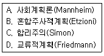
- A - B - C - D
- A - B - D - C
- A - C - D - B
- A - C - B - D
(정답률: 59%)
63. 다음 중 수도권정비계획안의 승인권자는?
- 대통령
- 국무총리
- 경기도지사
- 국토교통부장관
(정답률: 49%)
64. 한센(N. Hansen)이 과밀지역, 중간지역, 낙후지역으로 지역을 구분한 기준은?
- 기능지역
- 계획지역
- 동질지역
- 사업지역
(정답률: 61%)
65. P. Cooke(1992)가 제안한 개념으로 “제품ㆍ공정ㆍ지식의 상업화를 촉진하는 기업과 제도들의 네트워크”라고 정의한 대안적 지역개발이론에 가장 가까운 것은?
- 혁신환경론
- 신산업공간론
- 클러스터이론
- 지역혁신체제론
(정답률: 48%)
66. 다음 외국의 수도이전 사례 중 기존 수도의 혼잡과 집중을 방지하기 위하여 신수도를 건설한 사례에 해당하는 것은?
- 터키의 앙카라
- 브라질의 브라질리아
- 말레이시아의 푸트라자야
- 파키스탄의 이슬라마바드
(정답률: 57%)
67. 입지상은 어떤 지역의 산업이 전국의 동일 산업에 대한 상대적인 중요도를 측정하는 방법으로서, 그 지역산업의 상대적인 특화정도를 나타낸 계수이다. 보기의 경우 지역산업의 입지계수는?
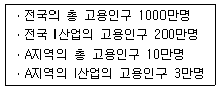
- 1
- 1.5
- 2.
- 2.5
(정답률: 73%)
68. 다음 중에서 인구 5만명 이상의 도시를 포함하거나, 도시화지역을 포함하면서 총인구가 10만명 이상이 되어야 한다고 규정하고 있는 곳은?
- 미국의 대도시통계지역(Metroploitan Statistical Area)
- 영국의 표준대도시권(Standard Metroploitan Labour Area)
- 일본의 기능적 도시권(Functional Urban Region)
- 우리나라의 광역도시권
(정답률: 57%)
69. 다음 자료를 이용하여 선형모형(직선법)에 의해 추계한 2015년의 인구는? (단, 기준년도는 1995년이다.)
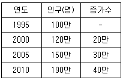
- 190만명
- 200만명
- 210만명
- 220만명
(정답률: 59%)
70. 인구예측모형을 요소모형과 비요소모형으로 구분할 때, 요소모형에 해당하는 것은?
- 곰페르츠모형
- 로지스틱모형
- 인구이동모형
- 지수성장모형
(정답률: 69%)
71. 다음의 지역투입산출모형 중 그 성격이 다른 것은?
- 다지역 모형
- 지역간 모형
- 균형지역 모형
- 특수지역 모형
(정답률: 51%)
72. 국토 및 지역계획에서 기본수요이론 및 접근방식 등을 적용하는데 현실적으로 지적되는 한계점으로 옳지 않은 것은?
- 기본수요접근법에는 아직도 통일된 기본개념이 없는 실정으로 국가에 따라 그리고 지역에 따라 서로 다른 형태로 운영되고 있다.
- 기본수요이론의 접근방식은 지역사회의 구조적 변화를 요구하고 있다. 그런데 국가의 권력 및 국가의 사회구조가 바뀌지 않는 한 지역의 사회구조는 바뀔 수 없는 것이다.
- 기본수요이론은 새로운 생산체계를 도입하려고 하며 기존의 생산체계를 무시하려 한다. 그런데 새로운 생산체계의 도입이나 기존 생산체계의 무시는 기존의 기득권과의 갈등관계를 초래한다.
- 기본수요이론은 성장을 통해서 주민들의 소득이 높아지고 주민들의 소득이 높아지면 기본수요가 충족될 수 있다고 강조하지만 기본수요의 보장을 통한 균형분배는 성장동력으로 미약하다.
(정답률: 43%)
73. 아래에서 설명하고 있는 A도시를 가장 잘 설명하고 있는 것은?
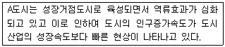
- 주거환경이 향상된다.
- 공식부문(Formal Sector)이 늘어난다.
- 전체 생산량이 늘어나 살기가 좋아진다.
- 가도시화(Pseudo - Urbanization)현상이 나타난다.
(정답률: 81%)
74. 다음 중 동질적인 집단을 대상으로 분석하는데 가장 유용한 통계적 기법은?
- 로짓모형(Logit Model)
- 군집분석(Cluster Analysis)
- 회귀분석(Regression Analysis)
- 분산분석(Analysis of Variance)
(정답률: 74%)
75. 지속가능한 지역발전이론과 관련된 내용으로 옳지 않은 것은?
- 경제성장 위주의 발전이 아닌 환경친화적 발전 개념이다.
- 1992년 일본 교토에서 개최된 UNCED에서 공식적으로 채택되었다.
- 1972년 UN인간환경회의에서 생태학적 발전이라는 개념이 도입되었다.
- 1987년 UN산하 환경과 발전위원회에서 제출한 보고서에서 제안되었다.
(정답률: 61%)
76. 다음 중 클라센(L. H. Klaassen)의 지역 분류 기준은?
- 기능적 연계
- 호혜적 영향력
- 소득수준과 성장률
- 사회간접자본과 생산활동
(정답률: 66%)
77. 지역개발을 위한 지역계획은 목표와 가장 거리가 먼 것은?
- 경제발전 도모
- 주민복지 증대
- 민간자본의 활용
- 주민소득의 향상
(정답률: 65%)
78. 본 튀넨(Von Thuenen)이 제시한 농업용 토지의 지대이론에서 토지의 지대를 결정하는 요인에 해당하지 않는 것은?
- 거리
- 인구 밀도
- 생산단위비용
- 제품의 단위가격
(정답률: 56%)
79. 다음의 지역발전이론 중 그 성격이 가장 다른 하나는?
- 기초수요전략
- 성장거점이론
- 농정적 개발론
- 농촌종합개발전략
(정답률: 59%)
80. 제1차 국토종합개발계획(1972-1981)에서 구분한 8중권에 속하지 않는 권역은?
- 대구권 개발
- 대전권 개발
- 제주권 개발
- 태백권 개발
(정답률: 58%)
5과목: 도시계획관계법규
81. 개발제한구역내 토지 중 매수청구가 있는 경우 매수대상여부와 매수예상가격 등을 매수청구인에게 알려주어야 하는 기간은?
- 토지의 매수를 청구받은 날부터 2개월 이내
- 토지의 매수를 청구받은 날부터 3개월 이내
- 토지의 매수를 청구받은 날부터 6개월 이내
- 토지의 매수를 청구받은 날부터 1년 이내
(정답률: 33%)
82. 다음 중 국토교통부장관이 개발제한구역이 해제된 지역에 대하여 해제 후 최초로 결정되는 도시ㆍ군관리계획의 내용이 해제의 목적이나 용도에 부합하지 아니하는 경우, 도시ㆍ군관리계획을 조정하도록 요구할 수 있는 기간은?
- 도시ㆍ군관리계획이 결정ㆍ고시된 날부터 14일 이내
- 도시ㆍ군관리계획이 결정ㆍ고시된 날부터 1개월 이내
- 도시ㆍ군관리계획이 결정ㆍ고시된 날부터 3개월 이내
- 도시ㆍ군관리계획이 결정ㆍ고시된 날부터 6개월 이내
(정답률: 44%)
83. 택지개발촉진법에 의하여 시행자가 한 처분에 이의가 있을 때 지정권자에게 행정심판을 제기할 수 있는 기간은?
- 처분이 있은 것을 안 날부터 3개월 이내
- 처분이 있은 날로부터 6개월 이내
- 처분이 있은 것을 안 날부터 1개월 이내, 처분이 있은 날로부터 3개월 이내
- 처분이 있은 것을 안 날부터 3개월 이내, 처분이 있은 날로부터 6개월 이내
(정답률: 55%)
84. 건축법상 용어의 정의로 옳지 않은 것은?
- “용적률”이란 대지면적에 대한 연면적의 비율을 말한다.
- “건폐율”이란 대지면적에 대한 건축면적의 비율을 말한다.
- “건축”이란 건축물을 신축ㆍ증축ㆍ개축ㆍ재축ㆍ이전 또는 대수선하는 것을 말한다.
- “대지”란 공간정보의 구축 및 관리 등에 관한 법률에 따라 각 필지로 나눈 토지를 말한다.
(정답률: 64%)
85. 주택법상 공동주택 리모델링 지원센터의 업무에 해당하지 않는 것은?
- 권리변동계획 수립에 관한 지원
- 설계자 및 시공자 선정 등에 대한 지원
- 공동주택 리모델링의 부정행위 관리감독
- 리모델링주택조합 설립을 위한 업무 지원
(정답률: 53%)
86. 관광진흥법령상 관광단지 조성사업에 따른 이주자를 위한 이주대책 수립 시 포함되어야 할 사항이 아닌 것은?
- 이주민 민원처리 방식
- 이주방법 및 이주시기
- 택지 및 농경지의 매입
- 택지 조성 및 주택 건설
(정답률: 50%)
87. 광역도시계획의 수립권자에 대한 설명으로 옳지 않은 것은?
- 국가계획과 관련된 광역도시계획의 수립이 필요한 경우 국토교통부장관이 수립한다.
- 광역계획권이 둘 이상의 시ㆍ도의 관할 구역에 걸쳐 있는 경우 관할 도지사가 단독으로 수립한다.
- 광역계획권이 같은 도의 관할구역에 속하여 있는 경우 관할 시장 또는 군수가 공동으로 수립한다.
- 광역계획을 지정한 날부터 3년이 지날 때까지 관할 시ㆍ도지사로부터 광역도시계획의 승인 신청이 없는 경우 국토교통부장관이 수립한다.
(정답률: 65%)
88. 도시개발법상 도시개발사업에서 토지소유자에 포함되는 자는?
- 임차권자
- 전세권자
- 지역권자
- 지상권자
(정답률: 53%)
89. 다음 중 주차장법상 주차장의 종류에 해당하지 않는 것은?
- 노상주차장
- 노변주차장
- 노외주차장
- 부설주차장
(정답률: 67%)
90. 도시공원 및 녹지 등에 관한 법률상 아래 내용에 대한 벌칙 기준은?
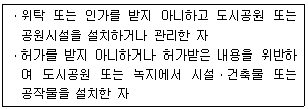
- 300만원 이하의 벌금
- 50만원 이하의 과태료
- 1년 이하의 징역 또는 1천만원 이하의 벌금
- 3년 이하의 징역 또는 2천만원 이하의 벌금
(정답률: 68%)
91. 도시개발법에 의한 개발계획의 수립 및 변경에 관한 설명으로 옳은 것은?
- 개발계획은 지정권자가 수립하여야 한다.
- 개발계획 수립 시 지구단위계획을 첨부하여야 한다.
- 개발계획을 수립함에 있어서는 공청회 또는 주민공람을 거쳐 주민의 의견을 청취하여야 한다.
- 도시개발구역지정권자는 도시개발사업을 환지방식으로 시행하고자 하는 경우 개발계획을 수립하는 때에는 환지방식이 적용되는 지역의 토지면적의 3분의 2 이상에 해당하는 토지소유자와 그 지역의 토지소유자 총수의 3분의 2 이상의 동의를 얻어야 한다.
(정답률: 36%)
92. 건축법령에서 규정하고 있지 않는 것은?
- 지역 및 지구의 지정에 관한 규정
- 건축물의 유지와 관리에 관한 규정
- 건축물의 대지 및 도로에 관한 규정
- 건축물의 구조 및 지료 등에 관한 규정
(정답률: 60%)
93. 도시개발법상 환지계획의 작성사항에 해당하지 않는 것은?
- 환지 설계
- 권리별로 된 환지 명세
- 필지별과 권리별로 된 청산 대상 토지 명세
- 입체 환지를 계획하는 경우에는 입체 환지용 건축물의 명세
(정답률: 41%)
94. 도시ㆍ군계획시설의 결정ㆍ구조 및 설치기준에 관한 규칙상 다음의 도시ㆍ군계획시설에 대한 설명 중 옳지 않은 것은?
- “주차장”이라 함은 주차장법 규정에 의한 노외주차장과 노상주차장을 말한다.
- 유원지의 규모는 1만제곱미터 이상으로 당해 유원지의 성격과 기능에 따라 적정하게 한다.
- 광장의 결정기준에 따른 분류에는 교통광장, 일반광장, 경관광장, 지하광장 및 건축물부설 광장이 있다.
- “운동장”이라 함은 국민의 건강증진과 여가선용에 기여하기 위하여 설치하는 종합운동장으로써, 관람석 수 1천석 이하의 소규모 실내운동장을 제외한다.
(정답률: 59%)
95. 개발제한구역관리계획에 관한 설명으로 옳지 않은 것은?
- 개발제한구역관리계획에는 시설설치에 따라 수용될 토지 등의 세목이 첨부되어야 한다.
- 개발제한구역관리계획은 5년 단위로 수립하여 국토교통부장관의 승인을 받아야 한다.
- 개발제한구역관리계획을 승인하고자 할 경우에는 중앙도시계획위원회의 심의를 거쳐야 한다.
- 개발제한구역관리계획은 개발제한구역안의 취락지구의 지정 및 정비에 관한 사항을 포함하여야 한다.
(정답률: 33%)
96. 개발행위의 허가 대상으로 볼 수 없는 것은?
- 토석의 채취
- 경작을 위한 토지의 형질 변경
- 건축물의 건축 또는 공작물 설치
- 녹지지역ㆍ관리지역 또는 자연환경보전지역에 물건을 1개월 이상 쌓아 놓는 행위
(정답률: 57%)
97. 주택법에 의한 사업계획의 승인을 득하였을 때 국토의 계획 및 이용에 관한 법률에 의해 의제처리되는 사항이 아닌 것은?
- 실시계획의 인가
- 도시ㆍ군관리계획의 결정
- 도시ㆍ군계획시설 사업시행자의 지정
- 도시ㆍ군계획시설에 대한 지형도면의 고시
(정답률: 49%)
98. 주차장법령상 노외주차장에 설치할 수 있는 부대시설에 해당하지 않는 것은? (단, 시ㆍ군 또는 구의 조례로 정하는 시설의 경우는 고려하지 않는다.)
- 관리사무소
- 자동차 관련 수리 판매시설
- 간이매점, 자동차 장식품 판매점
- 노외주차장의 관리ㆍ운영상 필요한 편의시설
(정답률: 63%)
99. 문화재ㆍ전통사찰 등 역사ㆍ문화적으로 보존가치가 큰 시설 및 지역의 보호와 보존할 필요가 있어 지정하는 용도지구는?
- 특화경관지구
- 특정개발진흥지구
- 중요시설물보존지구
- 역사문화환경보호지구
(정답률: 77%)
100. 국토의 계획 및 이용에 관한 법률에 따른 도시ㆍ군관리계획의 결정 또는 변경결정에서 주민 및 지방의회의 의견청취를 필요로 하지 않는 것은?
- 도시철도
- 주간선도로
- 여객자동차터미널
- 소공원 및 어린이공원
(정답률: 65%)